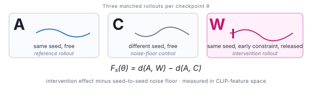

C5 · Optimized systems develop frustration
What is frustration? Put three antiferromagnetic spins on a triangle. Each pair wants to point opposite — but the three constraints cannot all be satisfied at once. The system has many local-minimum configurations of nearly equal energy, separated by barriers. This is frustration — competing local rules with no globally consistent ground state — and the result is a rugged energy landscape where the basin a system ends up in depends on its early history, not just its current state. Wolf, Katsnelson & Koonin (2018) and Vanchurin et al. (2022) argue: living matter sits in this regime.

Operationalization · three matched rollouts per checkpoint
For each checkpoint $\theta$, run three matched rollouts: $A_\theta$ (same seed, free), $C_\theta$ (different seed, free), $W_\theta$ (same seed, early spatial constraint then released). The anchored frustration score subtracts ordinary seed-to-seed variability from the intervention effect, measured in CLIP-feature space:

MSPD-optimized checkpoints show larger $A \leftrightarrow W$ gaps than matched random controls — directional evidence on both substrates.
- Flow-Lenia: 7/9 matched groups positive, sign-test $p = 0.090$
- Particle Life++: 6/7 matched groups positive, sign-test $p = 0.063$
Neither result reaches conventional significance — read as underpowered evidence of history dependence rather than confirmed effect. The natural strengthening is replication with a larger matched-group ensemble, without methodological change.